ゲーム概要
「原神」は、miHoYoが開発・運営するオープンワールド型アクションＲＰＧです。プレイヤーは広大なファンタジー世界「テイワット」を探索し、様々なキャラクターと共に冒険を繰り広げます。
特徴として、広大なオープンワールド探索や多彩なキャラクターとスキルそして、戦略的な戦闘システムを楽しみながらさらに楽しめる豊富なストーリーとクエストなどがあります。
キャラクター
各キャラクターは異なる元素とスキルを持ち、プレイヤーの戦術に大きな影響を与えます。以下は主なキャラクターの一部です。
旅人
主人公
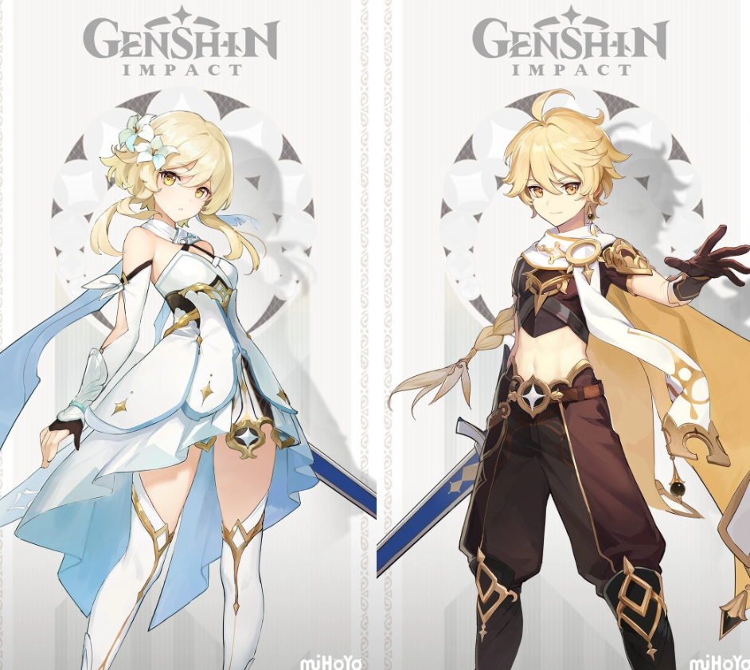ウェンティ
吞兵衛詩人
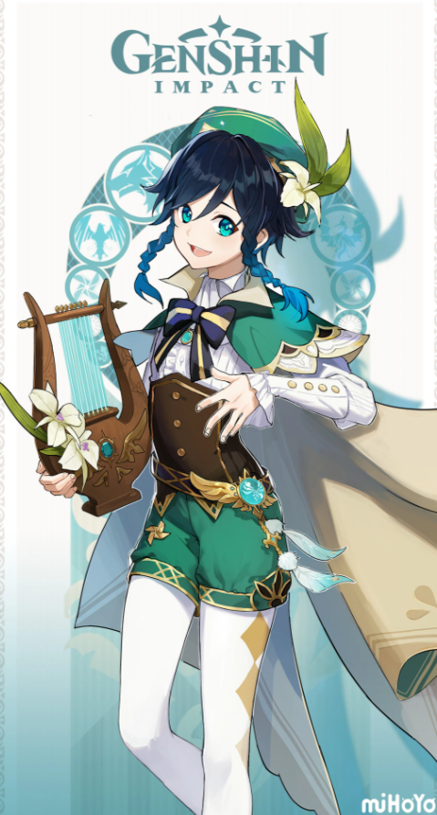鍾離
お金を持ち歩かない
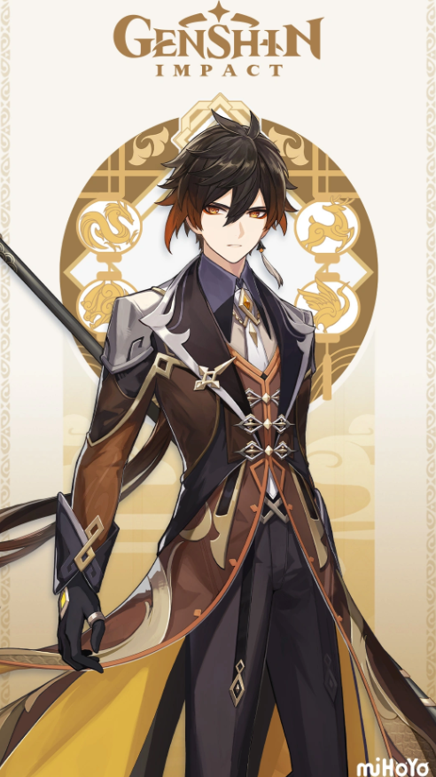雷電将軍
料理スキル0
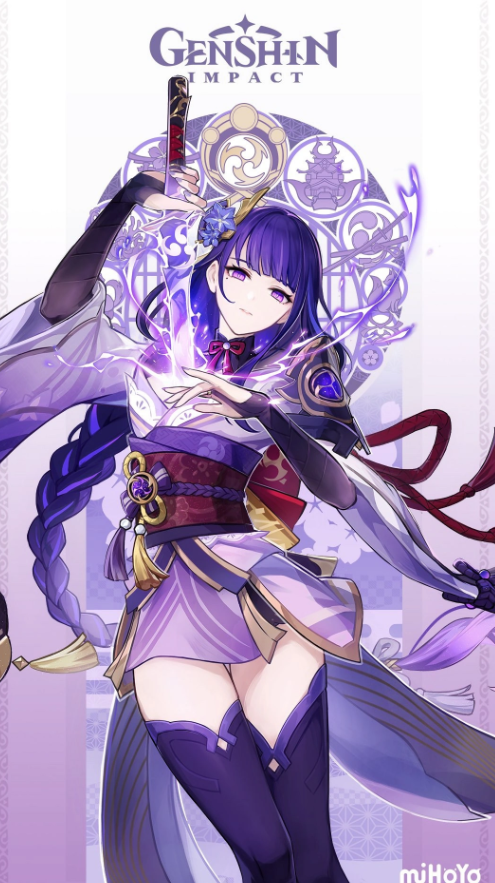ナヒーダ
ナヒママ
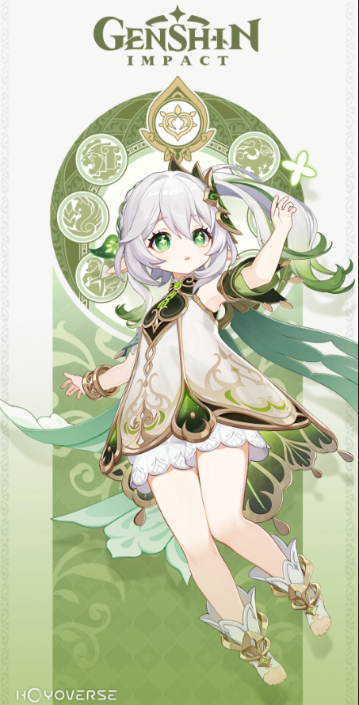フリーナ
フリ虐
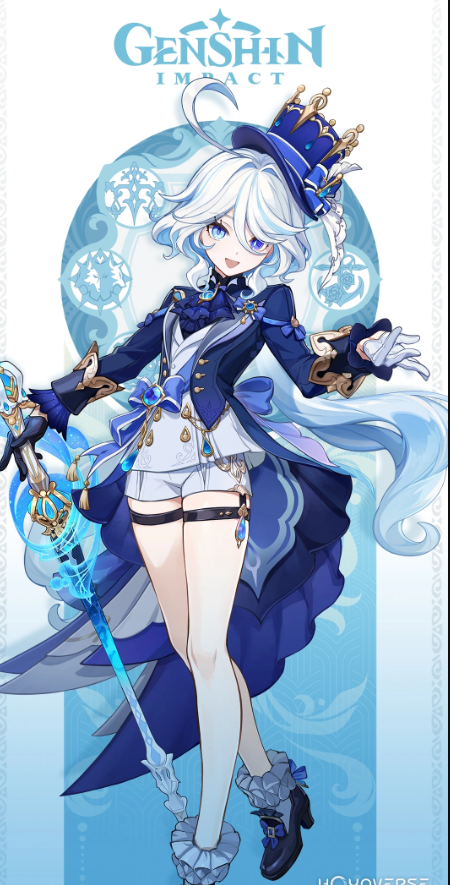テイワットの各街
各町の建築物には実際に存在した文化が含まれており、素晴らしい景色を眺めることができます。以下は主な町です。
モンド
風神「バルバトス」が守護する風の国「モンド」の中心都市です。中世ヨーロッパ風の建築が特徴で、美しい風景や自由な雰囲気が広がっています。町の中心には壮大な大聖堂があり、風の影響を強く感じることができます。
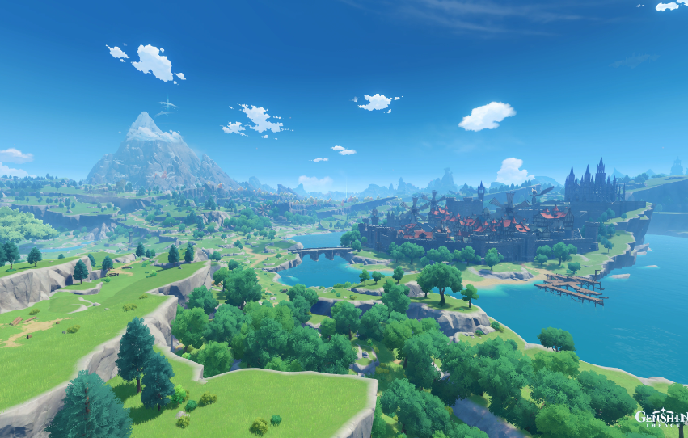璃月
岩神「モラクス」が守護する岩の国「璃月港」が中心の都市です。中国風の建築と伝統文化が色濃く反映されており、商業が盛んな地域です。
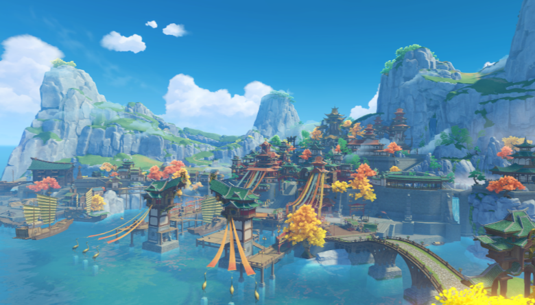稲妻
雷神「バアルゼブル」が治める雷の国で、鎖国政策が敷かれている島国です。日本の江戸時代を彷彿とさせる建築や文化が特徴です。
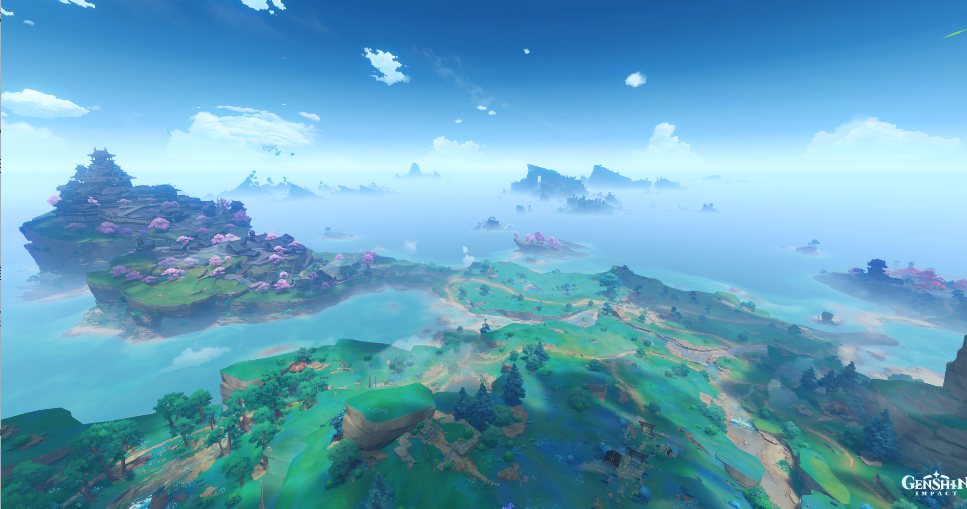スメール
草神 「クラクサナリデビ」 が守護する草の国で、豊かな自然と学術が発達した都市です。熱帯雨林や砂漠が広がる土地で、学問や知識を重んじる風潮があります。
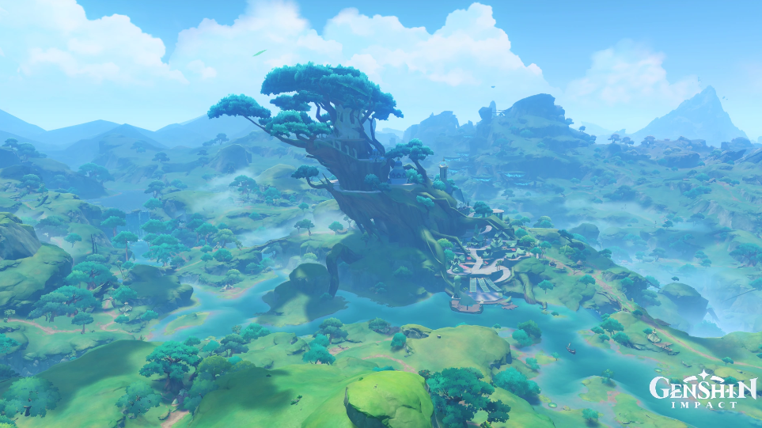フォンテーヌ
水神「フォカロルス」が守護する水の国です。フランスのベルエポック時代を彷彿とさせる華やかな都市で、技術と文化が融合しています。
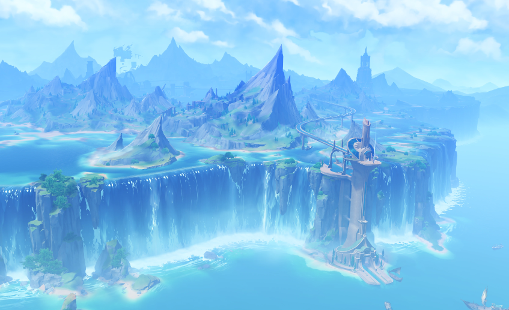